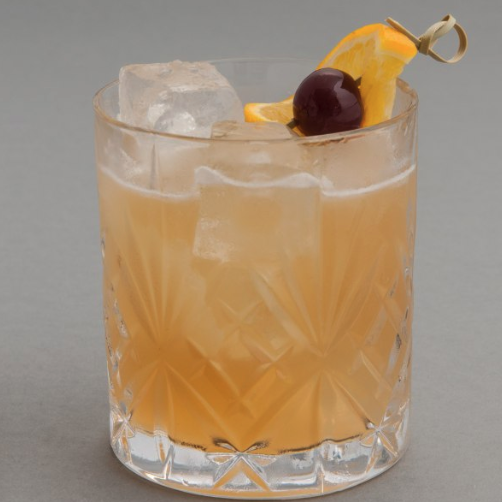
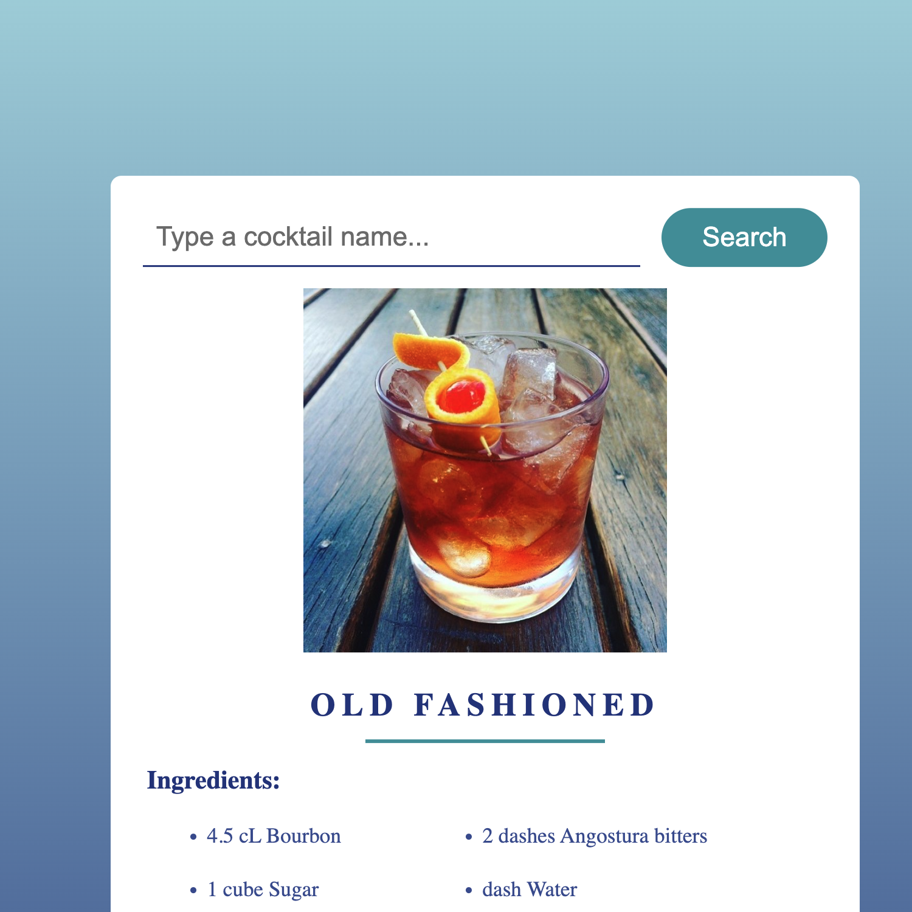

Your favorite Drink
Have you ever had an amazing drink while enjoying a night out? Wondered what was in it and how it was made to be so delicious? Use this app to learn what ingredients are used, how much of each, and the technique to making taste as good as a professional!
Click the link below to go to the app to learn your favorite drink!
Search Cocktails Site